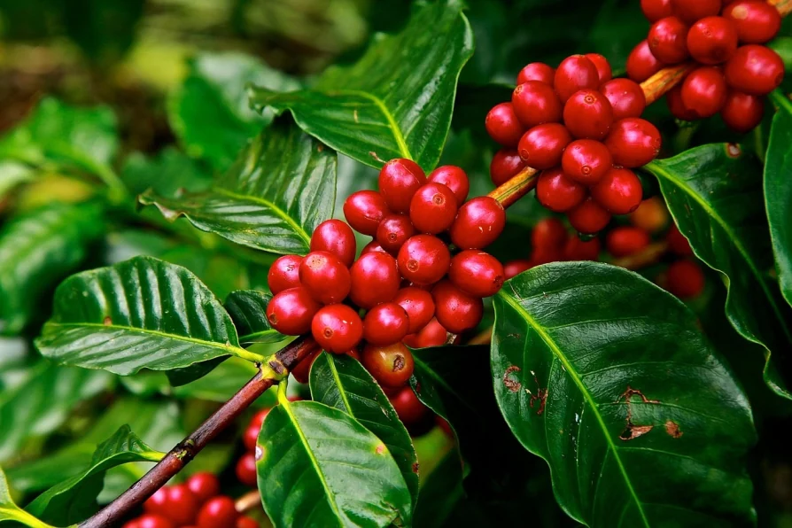

|
Coffee cultivation and trade began on the Arabian Peninsula.
By the 15th century, coffee was being grown in the Yemeni district of Arabia
|

|
 |
One reason for the popularity of coffee is
that it is something that can be enjoyed by almost everyone. It’s not an
expensive item or something that can only be afforded by selected individuals.
Coffee is also addictive.
|
|
Coffee can cause insomnia, nervousness, and nausea. However, coffee boosts your physical performance and can help you loose weight.
It also reduces the risk of Parkinson's disease
|

|